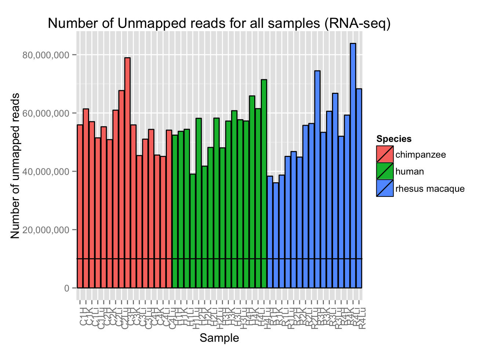
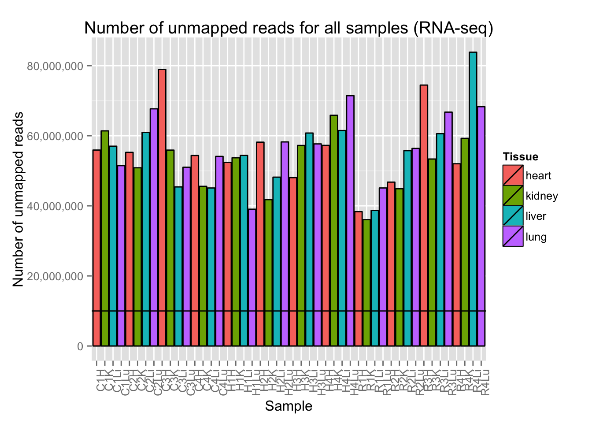
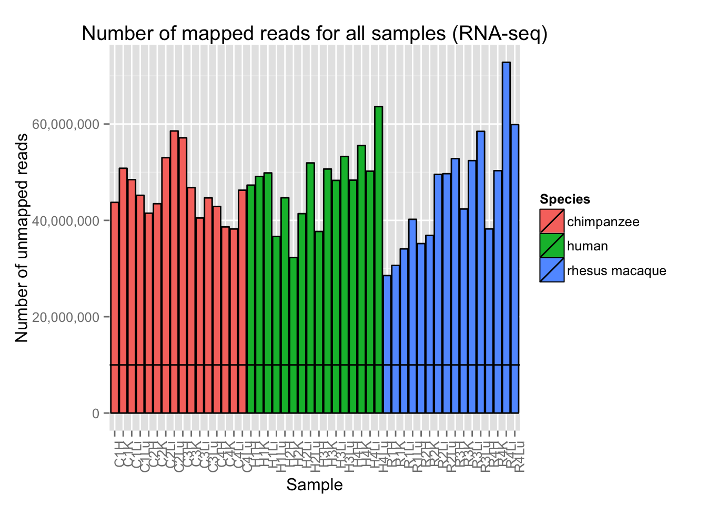
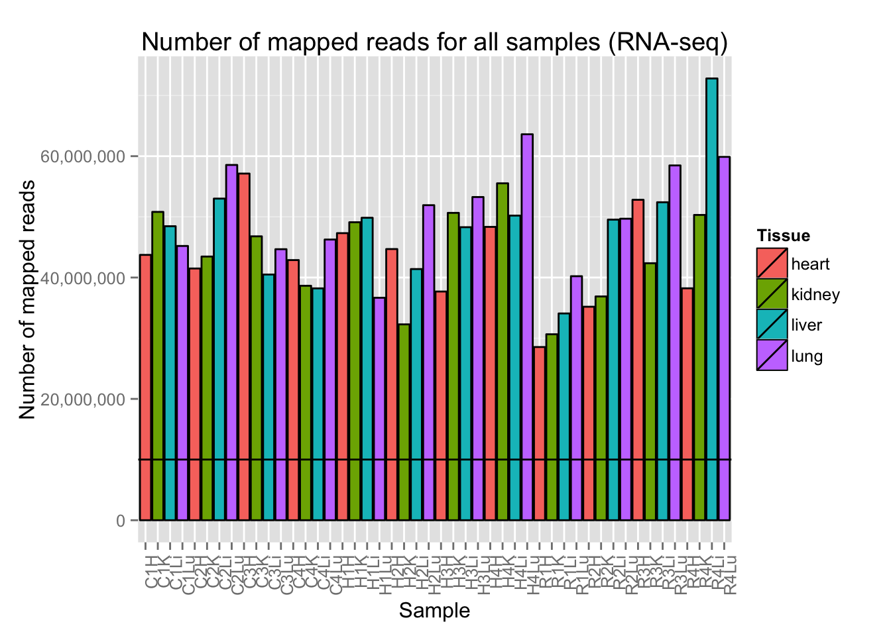

#Load data
Expression_unmapped_v_mapped <- read.csv("~/Reg_Evo_Primates/ashlar-trial/data/Expression_unmapped_v_mapped.csv")
Expression_unmapped_v_mapped[,4] <- as.numeric(Expression_unmapped_v_mapped[,4])
Expression_unmapped_v_mapped[,5] <- as.numeric(Expression_unmapped_v_mapped[,5])
#Load library(ies) needed
library(ggplot2)## Warning: package 'ggplot2' was built under R version 3.1.3library(scales)# Plot reads per sample (by species) with a line at 10 million reads
ggplot(Expression_unmapped_v_mapped, aes(x = factor(Sample.ID), y = Expression_unmapped_v_mapped[,4], fill = Species)) + geom_bar(stat = "identity", colour = "black") + theme(axis.text.x = element_text(angle = 90, hjust = 1)) + xlab("Sample") + ylab("Number of unmapped reads") + ggtitle("Number of Unmapped reads for all samples (RNA-seq)") + geom_hline(yintercept = 10000000) + scale_y_continuous(labels=comma)
# Plot reads per sample (by tissue) with a line at 10 million reads
ggplot(Expression_unmapped_v_mapped, aes(x = factor(Sample.ID), y = Expression_unmapped_v_mapped[,4], fill = Tissue)) + geom_bar(stat = "identity", colour = "black") + theme(axis.text.x = element_text(angle = 90, hjust = 1)) + xlab("Sample") + ylab("Number of unmapped reads") + ggtitle("Number of unmapped reads for all samples (RNA-seq)") + geom_hline(yintercept = 10000000) + scale_y_continuous(labels=comma)
# Plot reads per sample (by species) with a line at 10 million reads
ggplot(Expression_unmapped_v_mapped, aes(x = factor(Sample.ID), y = Expression_unmapped_v_mapped[,5], fill = Species)) + geom_bar(stat = "identity", colour = "black") + theme(axis.text.x = element_text(angle = 90, hjust = 1)) + xlab("Sample") + ylab("Number of unmapped reads") + ggtitle("Number of mapped reads for all samples (RNA-seq)") + geom_hline(yintercept = 10000000) + scale_y_continuous(labels=comma)
# Plot reads per sample (by tissue) with a line at 10 million reads
ggplot(Expression_unmapped_v_mapped, aes(x = factor(Sample.ID), y = Expression_unmapped_v_mapped[,5], fill = Tissue)) + geom_bar(stat = "identity", colour = "black") + theme(axis.text.x = element_text(angle = 90, hjust = 1)) + xlab("Sample") + ylab("Number of mapped reads") + ggtitle("Number of mapped reads for all samples (RNA-seq)") + geom_hline(yintercept = 10000000) + scale_y_continuous(labels=comma)